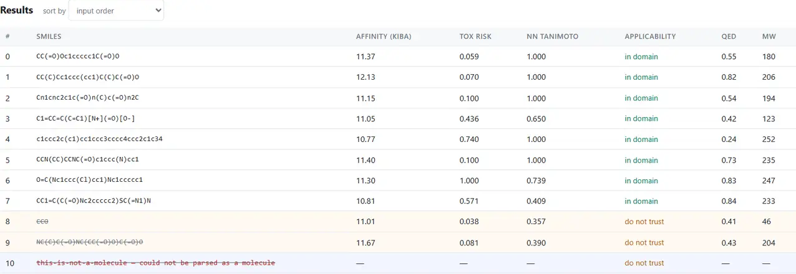

——并回答一个纯机器学习的问题:当测试样本和训练样本长得不像时, 模型会退化多少,它自己能不能察觉?
研发一款新药,要从几百万个候选分子里挑出少数几个真正拿去做实验。 挑错的代价极高,所以要先用计算方法筛一轮。
这其实不是化学问题,是个机器学习的老问题: 模型在和训练数据相似的样本上表现很好,一旦换成不像的样本就不行了。
把数据随机分成训练集和测试集,报一个很漂亮的分数。
随机分的时候,长得像的样本会被分到两边,测试集里其实有「亲戚」。 真实使用时没有这种好事。
刻意把数据分得更难,量出到底掉多少分, 再问模型知不知道自己正在出错。
形状代表分子的骨架(主体结构)。颜色只是为了区分训练集和测试集。
| 数据集 | 规模 | 用途 |
|---|---|---|
| Tox21 | 7,831 个化合物 → 标准化去重后 6,143 | 12 项毒性标签 |
| hERG | 11,052 个化合物 | 第二个数据集,用来复核结论 |
| KIBA | 2,030 分子 × 229 蛋白 = 117,193 个实测配对 | 结合强度 |
| PoseBusters / Astex | 428 + 85 个三维复合物 | 三维位姿评测 |
| PDBbind refined | 5,311 个复合物 | 第一个有物理单位的外部验证集 |
约 1/4 缺失——不是每个化合物都测过每一项。 阳性率只有 3.1%–18.3%,属于严重不平衡。
随机 → 骨架 → 留出分子 → 留出蛋白 → 留出骨架, 测试集一个比一个远。
ROC-AUC 是「排序能力」:0.5 等于瞎猜,1.0 是完美。 掉 0.0713 不是小数点后的噪声——
把分子变成一串 0/1(分子指纹:每一位表示「有没有某个小零件」), 再套一个随机森林。十几年前的技术。
在试过的每一个训练集规模上都只是追平,没有超过。
冻结的 ESM-2 蛋白模型 + 一个小型多层感知机,Pearson 0.8510 ± 0.0043。 赢的是别人预训练好的大模型,不是我们自己训的。
如果允许模型对一半样本说「我不确定,不答了」, 按什么标准挑出要放弃的那一半最好?
| 配置 | 毒性 ROC-AUC |
|---|---|
| 只做毒性 | 0.7689 |
| 两任务共享 | 0.6820 |
| 共享让毒性掉了 0.0869 | |
但换成预训练的 ChemBERTa 做同样的共享, 几乎没掉(0.7603 → 0.7619)。同样的改动,两种结果。
两个任务从来没有同时更新过参数——它们是前后脚各改各的。 结合强度跑在最后,所以每轮结束时,共享的部分几乎只被它调过。
用 20 个同一个蛋白的结构,无法支撑任何关于「对接方法好不好」的结论—— 它只描述了一个结合口袋。我们自己在中期就记录过这一点,评审也指出了同样的问题。
新增 28 项物理合法性检查(键长、键角、环平面性、与蛋白/水的空间冲突……), 把「位置对不对」和「化学上成不成立」分开报告。 一个位置大致正确但化学上不可能的结果,不应该算成功。

图中第 8 行是乙醇(距离 0.357)、第 9 行是一个二肽(0.390)——两者都远离训练集, 工具照样给出了预测值,但同时明确说不要相信它。这正是我们希望的行为。